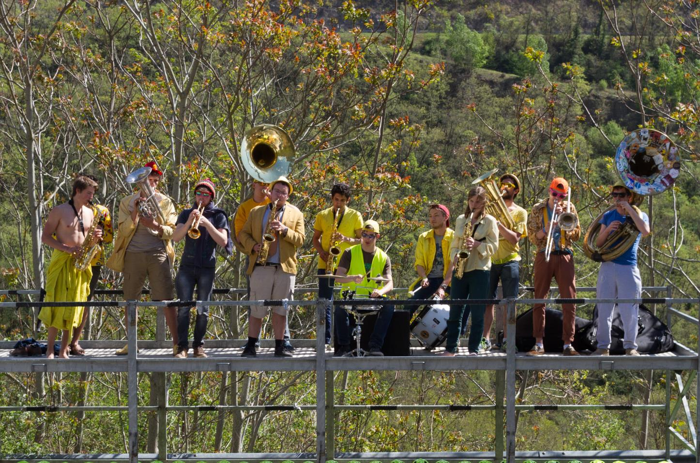

Nos prestations
Les Loud’N Around, c’est une fanfare étudiante parisienne de 12 musiciens.
Pour animer les événements de particuliers ou d’associations, nous sommes là !
Festivals, matchs, mariages, anniversaires, fête de village, soirée atypique ou petite surprise pour vos voisins, nous sommes prêts à relever tous les défis.
Notre répertoire est large et varié, du rock au disco/funky saupoudré de jazz et d’une bonne dose de brass band. Ainsi nous saurons nous adapter à toutes les situations !
Pour en savoir plus c’est très simple, il suffit de nous contacter en cliquant juste ci dessous !